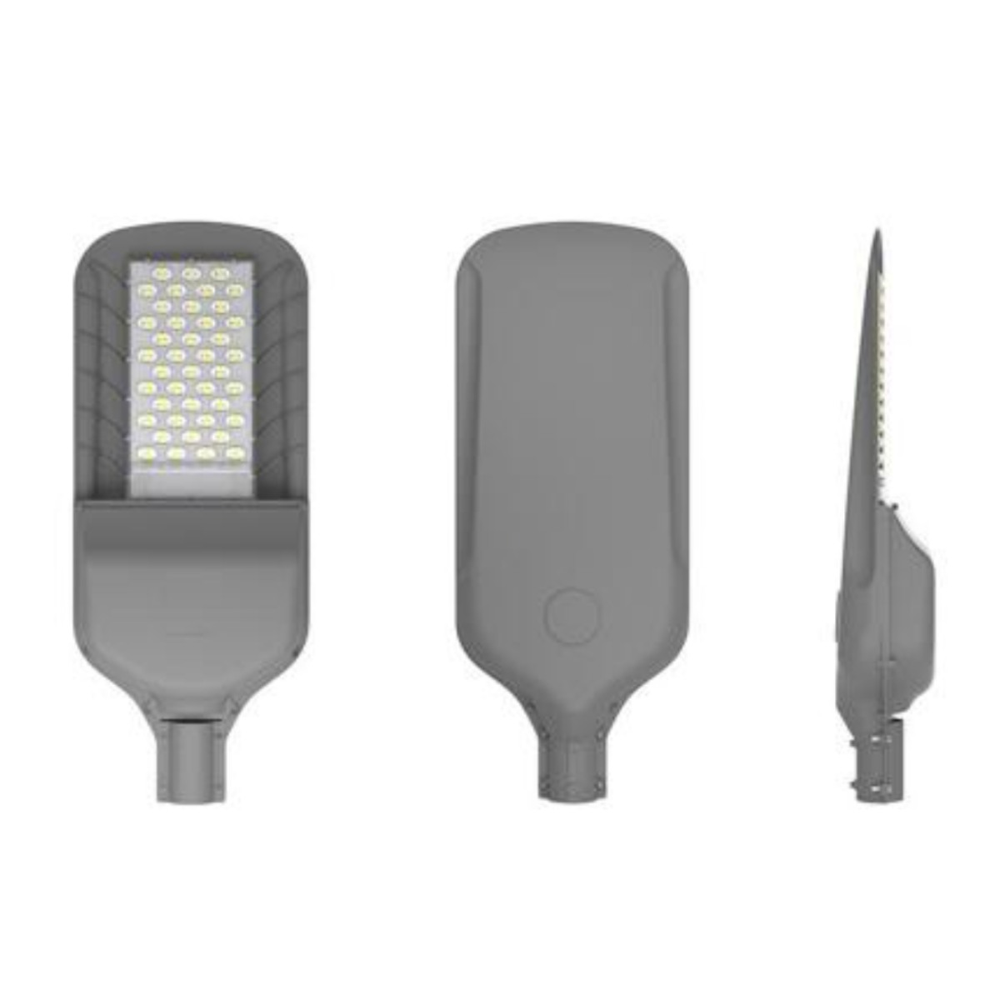
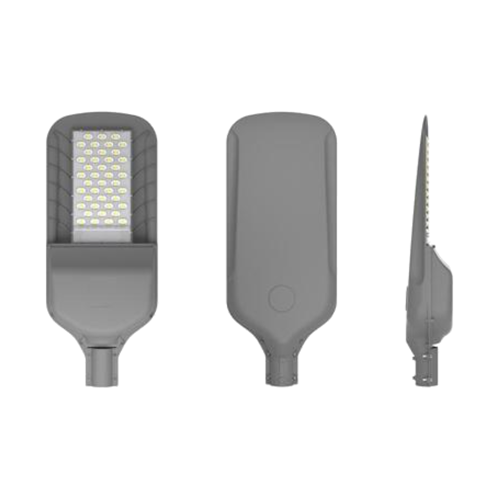
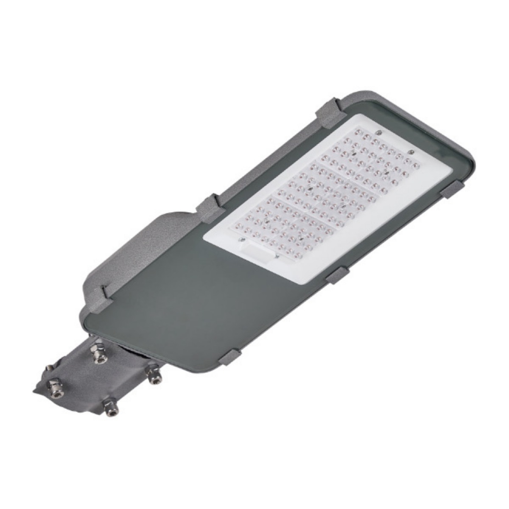
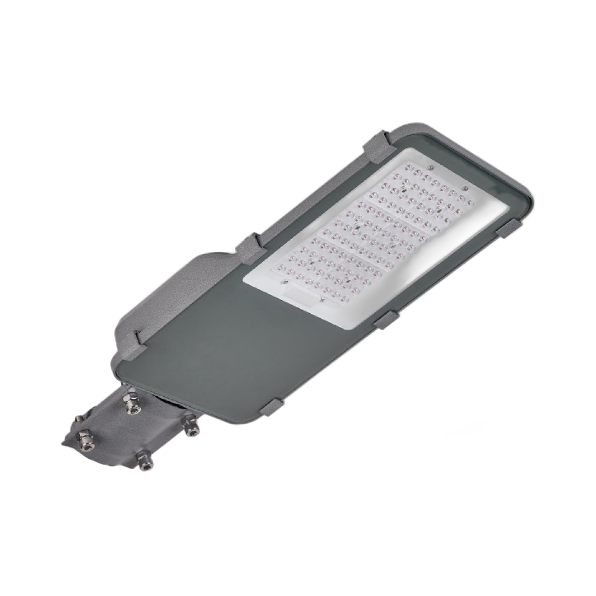
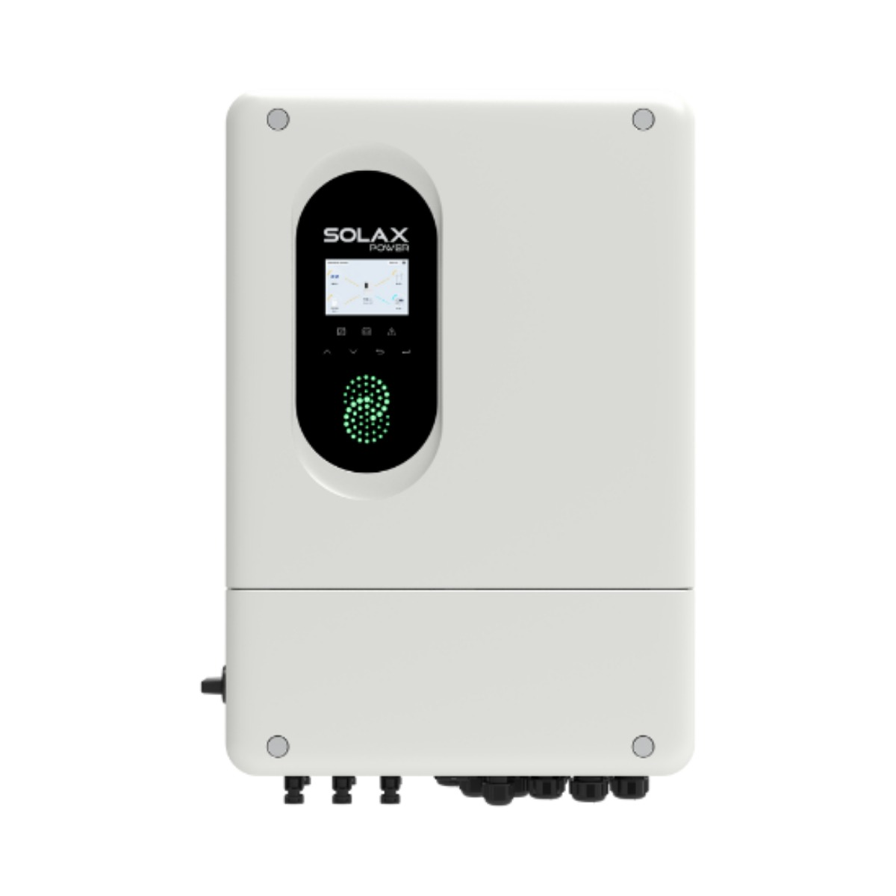
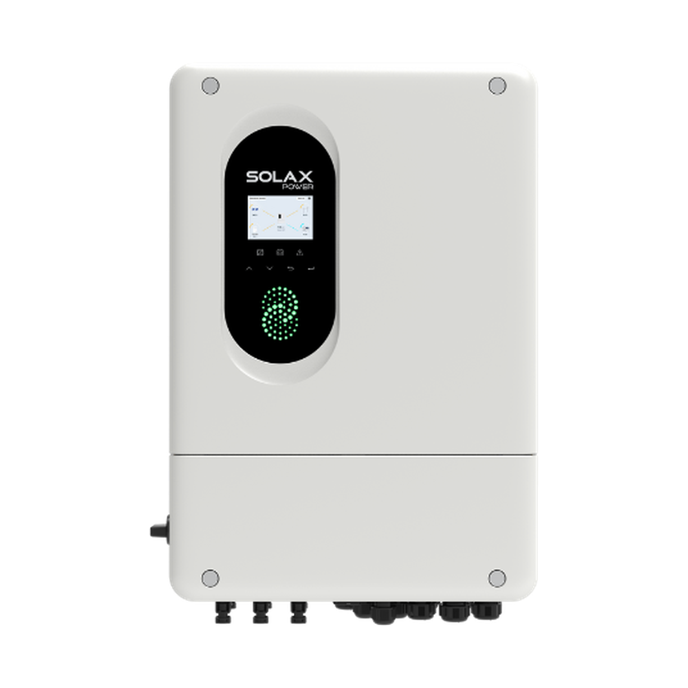

Ngày 17/11/2026 — đã dùng nguồn ảnh thật; không phải ảnh AI dựng lại. Kích thước PNG mới 1600×1600, không đồng nghĩa nâng độ chi tiết gốc. Nền kẻ caro giúp kiểm tra alpha.
Ảnh nguồn: 970×669 · PASS_ALPHA_AND_THREE_VIEWS


Ảnh nguồn: 889×772 · PASS_ALPHA


Ảnh nguồn: 516×516 · PASS_ALPHA_SOURCE_NATIVE_516PX


| ID | SKU | Lý do |
|---|---|---|
| 519 | YS-80W | native 600x438; slight shadow/edge artifacts after segmentation |
| 522 | HB01-60W | native 501x528; small manufacturer details still soft |
| 526 | DB-16300W | native 551x626; fine edges and LED details limited |
| 687 | PL-0307 (300×300×H380) | source catalog intrinsically blurry; requires higher-resolution true product photo |
Ưu tiên ảnh nguồn dài cạnh ít nhất 1200 px, ưu tiên >=1600 px khi có; xem cạnh / logo ở 100%, không xóa góc nhìn, không tạo lại chi tiết, có nguồn hợp lệ. Thay trên website từng lô sau human review.